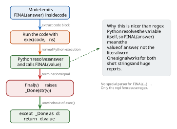

03 04 step 4 final
Step 4: Knowing when to stop — FINAL as a function
At some point the LLM has its answer. It needs to signal "I'm done." The RLM paper uses a FINAL(answer) marker that the orchestrator detects.
A naive approach: parse the model's text output with regex, looking for FINAL(...) as a string. This works, but creates an awkward split — some things the model writes are code (executed), and some are text (parsed). You end up needing two termination signals: FINAL("short answer") for inline text, and FINAL_VAR(variable_name) for large answers stored in REPL variables. Two regexes, two code paths, an ambiguity about whether FINAL(result) means the word "result" or the variable named result.
There's a simpler design: make FINAL a Python function in the namespace, just like llm_query and context:
class _Done(Exception):
def __init__(self, value): self.value = value
def final(v): raise _Done(str(v))
ns["FINAL"] = final
When the model writes FINAL(answer) inside a code block, Python evaluates it as a function call. The variable answer gets resolved by Python's normal name lookup — not our regex. The function raises an exception that unwinds the exec(), and our try/except catches it:
try:
exec(code, ns)
except _Done as d:
return d.value # we have our answer
>>> ns = {"FINAL": final}
>>> try:
... exec('FINAL("my answer")', ns)
... except _Done as d:
... print(d.value)
...
my answer

This is nice because:
- One signal, not two.
FINAL(x)works whetherxis a string literal or a variable holding a 200K-character report. Python resolves it. - No regex for termination. The only regex left is the one finding
```replfences. - Unlimited output for free. The answer passes through Python memory, not through the model's output token limit. The model just has to emit a variable name inside
FINAL(). - It's an established pattern. Using exceptions for control flow is how Python implements
StopIterationinforloops,SystemExitinsys.exit(), andKeyboardInterruptfrom Ctrl-C. We're in good company.